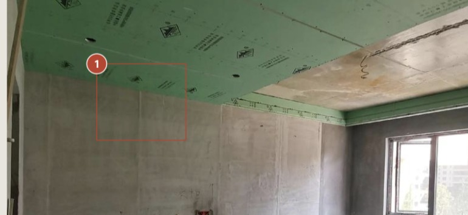

现场记录 · 精准标注 · 清楚交付
拍完现场，
报告就好了。
拍照、圈出问题、说两句话，
一份能转发的图文报告，就好了。

微信扫一扫，点「申请体验」
通过后重新扫码即可打开。
不用下载，不用注册，不用手机号。
不用下载，不用注册，不用手机号。
拍照、圈出问题、说两句话，
一份能转发的图文报告，就好了。

前两个是钱的问题，第三个是时间的问题。
报告不是「写」出来的，是现场顺手攒出来的。回到车上，它已经能发出去。
现场手脏、光线暗、没空打字——那些要一个字一个字写的说明，可以让它先写一版。
不想用也行——选「仅手动填写」，照片和录音就不会发给第三方，流程一样完整。
施工方自己留底、设计方现场交底核对、业主盯工地和收房验房——只要跟装修沾边都用得上。